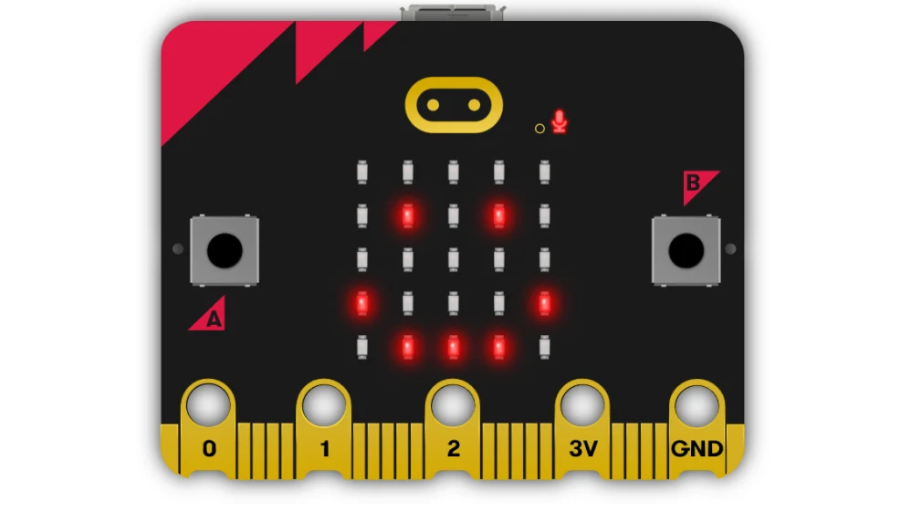

Mine arbeid
Prosjekt 1: Min første nettside
Dette er en nettside jeg laget som en del av et kurs med HTML og CSS. Jeg la til tekst, bilder og forskjellige stiler for å gjøre sidene attraktive og brukervennlige. Arbeidet med nettsiden hjalp meg å anvende kunnskapen jeg hadde tilegnet meg og bedre forstå hvordan nettsider er konstruert og designet.

Prosjekt 2: Fotografering
Jeg tok disse bildene under opplæringen min. I løpet av timene lærte jeg å jobbe med lys, velge effektive vinkler og redigere bilder for å få dem til å se livlige og uttrykksfulle ut. Denne erfaringen hjalp meg med å forbedre fotoferdighetene mine og mestre nye redigeringsteknikker.

Prosjekt 3: Programering av mikroBit
I dette prosjektet programmerte vi en micro:bit for å utføre ulike oppgaver. Vi skrev kode for å styre lys og lyd testet programmene våre og justerte dem for å få ønsket resultat. Gjennom prosjektet fikk vi praktisk erfaring med programmering, problemløsning og bruk av elektronikk på en morsom og lærerik måte.
